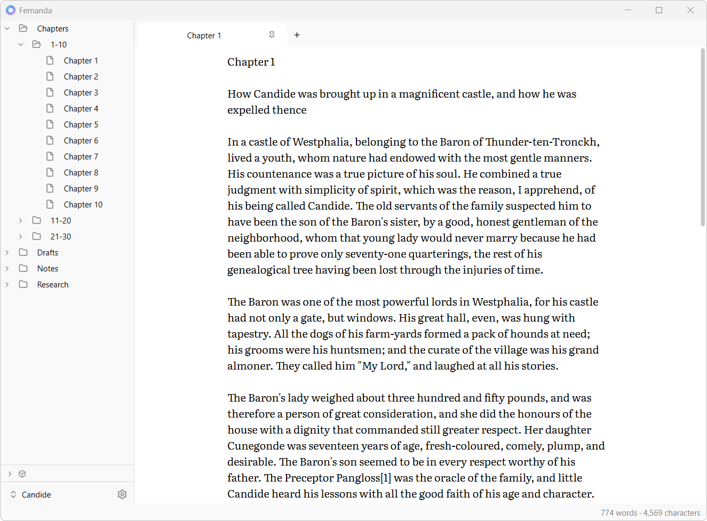

A vault is a folder
Open any folder as a vault. Fernanda adds one hidden folder for its settings and leaves the rest alone, so your chapters stay ordinary files that any other program can open.
A plain-text writing app for fiction, poetry, and long projects
Obsidian-style vaults. Your files stay plain text, on disk.

I'm a writer, and Fernanda is the writing app I've wanted for myself.
Its design is based on Obsidian, where a vault is just a folder on your computer. But Fernanda is meant for writing projects (novels, poetry, collections), and everything you write stays in plain-text files you own and can open in any editor.
Open any folder as a vault. Fernanda adds one hidden folder for its settings and leaves the rest alone, so your chapters stay ordinary files that any other program can open.
There's no Save command and no unsaved state. Every file exists on disk from the moment it's created, and changes are written as you type. If a save ever fails, the window won't close until it's dealt with.
Line endings, byte order marks, no-break spaces, and other special characters are kept as they were. Open a manuscript, fix a typo, and the only change on disk is the typo.
Templates, notes, and research you want in reach whatever you're working on live in one shared vault, shown in a drawer under each project's own files. Open the same note in two windows and it stays in sync as you type.
For a vault in a Git repository: see what's changed, with each changed word marked, then commit, discard, switch and make branches, and sync, much as GitHub Desktop does. It uses the Git on your computer, and reaches the remote only when you click.
Edit a file in another program, pull it with Git, or let a sync client update it, and it reloads in place as a single undo step. Many files changing at once are handled together.
The full list is in Features.md, and what's planned is in Future.md.
Vaults, tabs, splits, Go to File, and the settings will feel familiar. Where Fernanda differs, it's mostly because it's built for long-form prose in plain text.
.txt is a first-class file type and the default for new files. Obsidian doesn't open .txt at all.There's more in Differences from Obsidian.
Built in C++ with Qt, not Electron: a desktop program, not a web page in a window.
Fernanda never sends your writing anywhere on its own. The only thing it sends unasked is an update check to GitHub, which you can turn off. The privacy statement has the details.
Under the GPL 3. The code, the docs, and the plans are all on GitHub.
Get the latest build for Windows, macOS, or Linux. Each release's notes cover installing, updating, and uninstalling, and Fernanda tells you when a newer version is out.
Fernanda hasn't reached 1.0 yet. Keep regular backups of your work.
The builds are unsigned, so Windows and macOS will warn you the first time you run one. The macOS and Linux builds aren't well tested yet. Fernanda edits plain text: Markdown and Fountain files open as the text they are, with no rendering for now, and there are no links, tags, or metadata.